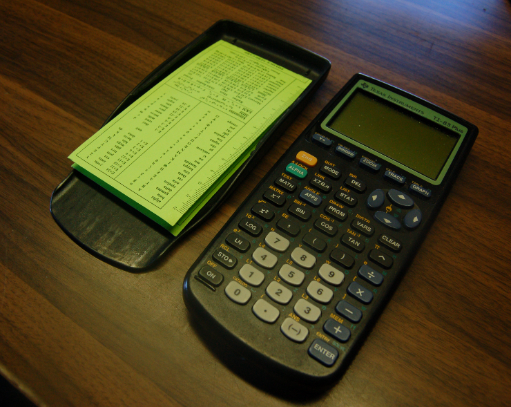

Resources
This page should evoke the phrase "let me Google that for you". Of course, there are many places on the web where you can find useful tools that are worth taking advantage of, and it can be tough to sift through them all. This is just a list of some of those tools that we recommend first!
Getting Started
First things first - this page supports the UNCo Department of Physics. Here are links to the official university faculty and research pages:
Software Development Resources
Here are a few additional links to tools that will help you develop your project:
- GitHub - a powerful version control system
- Ubuntu - a popular Linux distribution
- "LearnCodeTheHardWay.org" - excellent third-party tutorials on programming languages
CAD Programs
Computer Aided Design programs can be an essential tool for designing project elements, particularly for mechanical and electrical components. Here are (legal) ways to find free versions of good software:
-
AutoDesk Inventor - Student Edition
- AutoDesk offers a huge selection of free software liscences for students. The only hitch is that you need a verifiable student email account to access the downloads. First, sign up for an Autodesk student account here.
- While we encourage you to download as many as you'd like (and then submit tutoials on what you've learned about those programs), be sure to download "AutoDesk Inventor Professional 2011" here
(The 2011 version is what is used in the AutoDesk Inventor '11 Tutorial, but feel free to try any version). - Download the 15 gajillion terabyte installer(s) and install Inventor. Keep in mind that Inventor is best used on a Windows desktop with moderate graphics capabilities, but laptops and Macs will work too.
- When you're all set up, head over to the AutoDesk Inventor '11 Tutorial page to start learning some of the basics!
- EAGLE PCB
Cheat Sheets and References
Who among us has ever been able to recall the value of the Rydberg constant, R? Or perhaps the conversion factor between dynes and newtons? If you scoff at the triviality of memorizing the orbital periods of each planet and other sometime-useful things, this is your page. From Dr. Willis' "Nerd Card" to cheat sheets for BASH commands, give your Hippocampus a break and download some useful cheat sheets here!
|  |
| Figure 1 |
|---|
| "SO PORTABLE!!" |
The scissor icon, , designates cheat sheets that can be printed, cut, and folded to make convenient pocket-sized or calculator-sized cards by simply printing the sheet on both sides of a piece of paper. (Figure 1)
Physics
The "Nerd Card" - A general reference that contains several constants and conversion factors from various physical sciences. It also references some useful mathematics tricks and can act as a ruler!
C. Willis, 1995, Univ. of Northern Colo., Physics Dept.
Computer Sciences
The "BASH Cheat Sheet" - A short quick reference guide to Linux Bash Shell commands and processes.
From learncodethehardway.org